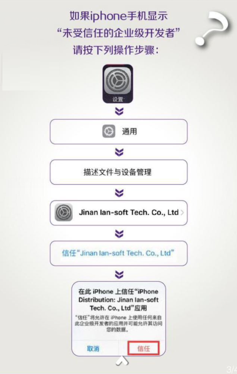
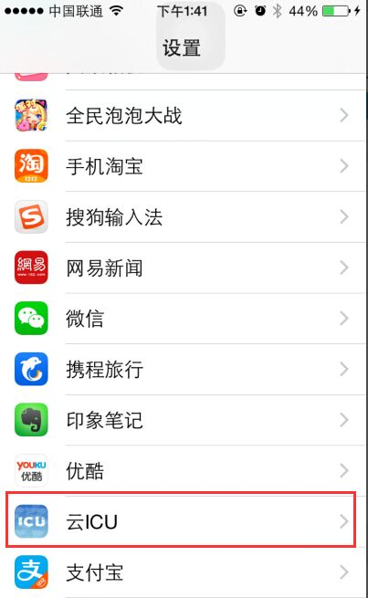
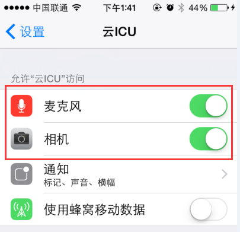

-
1、忘记appleID,无法下载苹果版APP怎么办？
点击我下载
-
2、苹果版 “未受信任的企业级开发者”！

-
3、进入APP后，视频没有画面，说话别人也听不见！
【苹果版】
（1）退出“云ICU”APP,回到桌面，找到“设置”
（2）打开“设置”，找到“云ICU”，如下图：

（3）点击“云ICU”设置允许访问麦克风和相机，如下图：

【安卓版】
（1）退出“云ICU”APP,回到桌面，找到“设置”
（2）打开“权限”设置相机、麦克风允许访问的应用
-
3、其他问题
点击下面的“我有其他问题”，将您的问题反馈给我们，谢谢！
我有其他问题